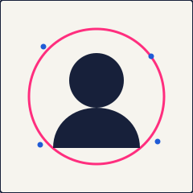
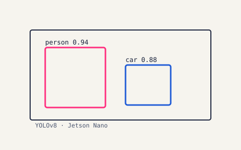
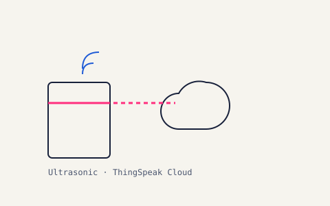
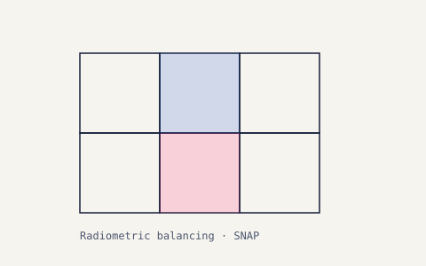

Northeastern University
MS in Computer Science, Khoury College — Boston, MA. Jan 2026 – May 2028 (expected).
computer vision · deep learning · edge AI
I’m Trupal — an MS Computer Science student at Northeastern and a published researcher. I build computer-vision and deep-learning systems that run where they’re needed, on the cloud or on-device.
tip: press ⌘K or / to open the command palette
click the plot to drop points — the line refits live ✦
A little two-body gravity simulator, because I love space (and once spent a summer wrangling satellite imagery at ISRO). Drag from a point to launch a satellite — the arrow sets its velocity. A quick tap drops one straight into a circular orbit.
drag to aim & launch · tap for a circular orbit ✦

I started in computer engineering and found my footing in computer vision during an internship at the Indian Space Research Organisation, working on satellite image processing. Since then I’ve published research on edge inference and IoT analytics, and I’m now pursuing my Master’s at Northeastern.
I like problems that span the whole stack: capturing the data, training the model, and shipping it somewhere real — a Jetson Nano, a Raspberry Pi, or a web app people actually use.
MS in Computer Science, Khoury College — Boston, MA. Jan 2026 – May 2028 (expected).
B.Tech in Computer Engineering — Changa, Gujarat. 2021 – 2025. CGPA 9.45 / 10.
Satellite image processing, object detection, and image enhancement pipelines.
CNNs and preprocessing frameworks, including hyperspectral image analysis for agriculture.
On-device inference and cloud analytics for real-time, low-latency systems.
End-to-end web applications with authentication and data management.

YOLOv8 detection running on-device for low-latency edge inference. Presented at ICT4SD 2024, published in Springer LNNS.

Smart-city IoT system using ultrasonic sensors and ThingSpeak cloud analytics. Accepted at SMARTCOMM 2025 (Springer).

Radiometric balancing of high-resolution mosaic images in the SNAP environment, improving visual consistency and geospatial accuracy.
9th International Conference on ICT for Sustainable Development (ICT4SD 2024) — Springer LNNS.
Raspberry Pi and cloud-based analytics. Accepted at SMARTCOMM 2025 — Springer.